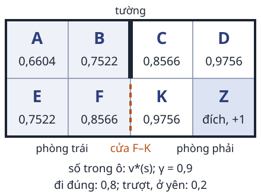
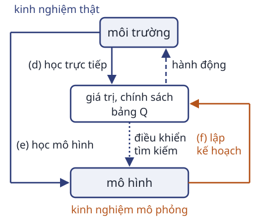
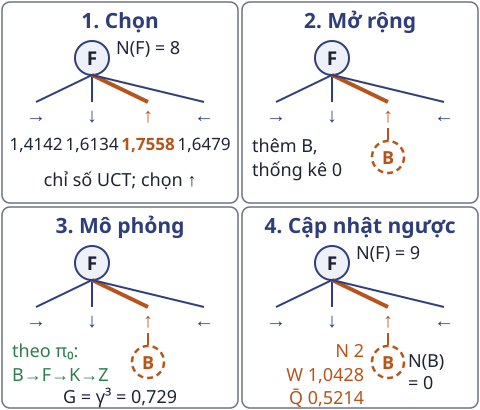
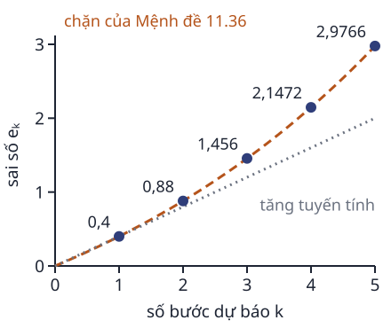
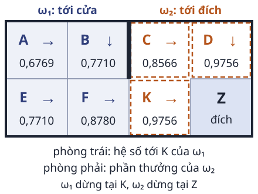

Dyna, tìm kiếm theo cây, tối ưu kế hoạch, tùy chọn
Khi mô hình cố định, các bảo đảm hội tụ và cải thiện của lập kế hoạch đúng trên bài toán mà mô hình định nghĩa; sai số của mô hình chỉ được chặn cho một ô của bảng đếm và cho dự báo vòng hở.
Trường Đại học Công nghệ, Đại học Quốc gia Hà Nội
Năm học 2026–2027, học kỳ 1
Tiên quyết và quy ước
Nhắc lại:
Mô hình cho $(S',R)$ hoặc phân phối của chúng khi biết $(s,a)$ (Định nghĩa 01.14).
Q-learning, mục tiêu $R+\gamma\max_{a'}Q(S',a')$: nếu mọi cặp được cập nhật vô hạn lần, bước học thỏa Robbins–Monro thì $Q_t\to q_*$ hầu chắc chắn (Định lý 06.21).
${q_\pi(s,a)=r(s,a)+\gamma\sum_{s'}p(s'\mid s,a)\,v_\pi(s')}$ và ${v_\pi(s)=\sum_a\pi(a\mid s)\,q_\pi(s,a)}$ (Mệnh đề 03.22, 03.23).
Với $\pi$, $\pi'$ Markov dừng, $\pi'$ xác định, nếu $q_\pi(s,\pi'(s))\ge v_\pi(s)$ với mọi $s$ thì $v_{\pi'}\ge v_\pi$ (Định lý 04.13).
Ký hiệu: MDP hữu hạn, $\gamma\in[0,1)$; $\mathcal S^+$ là $\mathcal S$ thêm trạng thái kết thúc; $v_*$, $q_*$ tối ưu; $\hat p$, $\hat r$ học được; $\mathbb E_\pi$ theo $\pi$ và động lực thật.
Mục tiêu học tập
Phân biệt mô hình phân phối và mẫu, lập kế hoạch nền và tại thời điểm quyết định; ước lượng $\hat p$ bằng tần suất, tách hai loại bất định, tính độ lệch chuẩn của $\hat p$.
Tính tay một bước thật của Dyna-Q; nêu điều kiện Q-planning hội tụ; giải thích vì sao mô hình sai cần thưởng thăm dò.
So sánh cập nhật kỳ vọng và mẫu về chi phí, sai số khi ngân sách dưới hệ số phân nhánh.
Phát biểu tính chất cải thiện của rollout cùng giả thiết; tính số mô phỏng cho xác suất chọn sai cho trước, chỉ số cận tin cậy trên; thực hiện một vòng tìm kiếm theo cây Monte Carlo qua bốn pha.
Mục tiêu học tập
Tính gradient của chi phí kế hoạch qua mô hình khả vi bằng truy hồi ngược; tính một bước hạ gradient, một vòng entropy chéo; mô tả điều khiển dự báo, chặn sai số tích lũy.
Định nghĩa tùy chọn (option), chính sách phân cấp; tính mô hình của một tùy chọn; viết phương trình Bellman bán-MDP (semi-Markov decision process, SMDP); thực hiện lặp giá trị và một cập nhật Q-learning với tùy chọn.
Với bài toán cụ thể, chọn cách dùng mô hình phù hợp và kiểm giả thiết mà bảo đảm của cách đó cần.
Đọc trước: Sutton và Barto (2018), Chương 8, §2.7, §17.2.
Ngữ cảnh

Mê cung hai phòng (Ví dụ 11.1): đi đúng với xác suất $0{,}8$, ở yên với xác suất $0{,}2$; $+1$ khi vào $\mathrm Z$; $\gamma=0{,}9$.
Khung chung: mô hình sinh mẫu chuyển, cập nhật trên các mẫu đó cho giá trị và chính sách; tối ưu bằng đạo hàm bỏ khâu giá trị.
Q-learning ($Q\equiv0$, $\alpha=0{,}5$) sau lượt thứ nhất chỉ có $Q(\mathrm K,\rightarrow)=0{,}5$; bốn mẫu còn lại cho mục tiêu $0$, không được dùng lại.
Vấn đề trung tâm
Câu hỏi: tác tử chỉ được đi ít bước thật, nhưng sau mỗi bước được tính thêm trên một mô hình học từ các bước đã đi. Dùng mô hình đó thế nào để chọn hành động tốt hơn phương pháp phi mô hình với cùng số bước thật, và sai số của mô hình làm mất những bảo đảm nào?
2.Tính bất định của môi trường và lập kế hoạch nền
Mô hình học từ ít mẫu có sai số, nhưng mỗi bước thật vẫn cho thêm nhiều cập nhật.
mô hình phân phối · mô hình đếm · bất định nhận thức · Dyna-Q · cập nhật mẫu
Ví dụ: mô hình của cặp $(\mathrm F,\rightarrow)$
Câu hỏi: mô hình học từ ít bước thật sai đến đâu, cho thêm cập nhật thế nào?
Ví dụ 11.2. $\max_aQ(\mathrm K,a)=0{,}5$, $\max_aQ(\mathrm F,a)=0$; bảng $\{\mathrm K:0{,}8;\ \mathrm F:0{,}2\}$ cho mục tiêu kỳ vọng $0{,}36$; một lần rút cho $0{,}45$ hoặc $0$.
Trực quan. Mô hình trả cả bảng, hoặc một lần rút.
Định nghĩa 11.1. Mô hình phân phối (distribution model) trả phân phối $\hat p(\cdot,\cdot\mid s,a)$ của (trạng thái kế, phần thưởng).
Mô hình mẫu (sample model) trả một cặp $(R,S')$ rút theo $\hat p$, độc lập giữa các lần gọi.
Kinh nghiệm mô phỏng (simulated experience): mẫu chuyển sinh từ mô hình.
Lập kế hoạch nền và lập kế hoạch tại thời điểm quyết định
Trực quan. Phép tính trên mô hình phục vụ nhiều trạng thái, hoặc chỉ trạng thái đang đứng.
Ví dụ. Ở $\mathrm A$, cập nhật $Q(\mathrm F,\rightarrow)$; ở $\mathrm F$, thử trước bốn hành động.
Định nghĩa 11.2.
Lập kế hoạch nền (background planning) cải thiện giá trị cho nhiều trạng thái trước khi gặp chúng.
Lập kế hoạch tại thời điểm quyết định (decision-time planning) chạy sau khi quan sát $S_t$, trả $A_t$.
Mô hình đếm
Sau lượt thứ nhất, $(\mathrm A,\rightarrow)$ được thử hai lần, sang $\mathrm B$ một lần: $\hat p(\mathrm B\mid\mathrm A,\rightarrow)=0{,}5$, trong khi $p=0{,}8$ (Ví dụ 11.3).
Trực quan. Trượt thuộc về môi trường; sai lệch của $\hat p$ do ít dữ liệu, giảm khi $C$ tăng.
Định nghĩa 11.4. Với $C(s,a)\ge1$ lần thử, $C(s,a,s')$ lần tới $s'$, mô hình đếm (count-based model, maximum-likelihood model) là
Mệnh đề 11.5.Giả thiết: $C$ cố định trước khi thử; $S'_1,\dots,S'_C$ độc lập, cùng phân phối $p(\cdot\mid s,a)$; $p=p(s'\mid s,a)$. Kết luận: $\mathbb E\,\hat p=p$, $\operatorname{Var}\hat p=p(1-p)/C$.
Chứng minh. $C(s,a,s')$ là tổng của $C$ biến Bernoulli độc lập, tham số $p$.
Bất định ngẫu nhiên và bất định nhận thức
Cùng công thức phương sai chứa hai đại lượng: tử số ${p(1-p)}$ và thương ${p(1-p)/C}$.
Ví dụ 11.4, $p=0{,}8$: $C(\mathrm F,\rightarrow)$
$2$
$5$
$50$
$\sqrt{0{,}16/C}$
$0{,}2828$
$0{,}1789$
$0{,}0566$
Định nghĩa 11.6. Bất định ngẫu nhiên (aleatoric uncertainty) đo bằng $p(1-p)$, không đổi theo $C$; bất định nhận thức (epistemic uncertainty) đo bằng ${\operatorname{Var}\hat p=p(1-p)/C}$.
Lưu ý: tập mô hình (model ensemble) báo độ phân tán $0$ ở cặp một mẫu (Nhận xét 11.7).
Bài tập: hai loại bất định
Câu hỏi (Bài tập 11.2): mê cung hai phòng trượt với xác suất $0{,}2$; xác định đúng hay sai, giải thích một câu.
Lời giải
(a)
thêm dữ liệu cho $(\mathrm F,\rightarrow)$ làm giảm xác suất trượt
Sai; trượt là bất định ngẫu nhiên.
(b)
sau một lần thử ${(\mathrm B,\downarrow)\to\mathrm F}$, ${\hat p(\mathrm F\mid\mathrm B,\downarrow)=1}$ nên cặp này hết bất định
Sai; với $C=1$, $\hat p$ có độ lệch chuẩn $\sqrt{0{,}8\cdot0{,}2}=0{,}4$.
(c)
môi trường tất định không có bất định nhận thức
Sai; cặp chưa thử chưa biết kết cục.
(d)
với $C(s,a)=8$ và $p=0{,}5$, độ lệch chuẩn của $\hat p$ bằng $0{,}1768$
Đúng; $\sqrt{0{,}25/8}=0{,}1768$.
Q-planning
Q-learning dùng mỗi mẫu thật một lần.
Trực quan. Quy tắc không hỏi mẫu từ đâu tới.
cặp ($\alpha=0{,}5$, $\gamma=0{,}9$)
mục tiêu
sai lệch
giá trị mới
$(\mathrm F,\rightarrow)$
$0+0{,}9\cdot0{,}5=0{,}45$
$0{,}45$
$0{,}225$
Thuật toán 11.8. Lặp: rút ngẫu nhiên cặp hợp lệ $(S,A)$; mô hình mẫu trả $(R,S')$; cập nhật $Q(S,A)$ như Q-learning.
Giả thiết: mô hình cố định, xác định ở mọi cặp; mọi cặp chọn vô hạn lần; bước học Robbins–Monro (Định nghĩa 06.19).
Bảo đảm: $Q\to\hat q_*$ (tối ưu trên mô hình) hầu chắc chắn (Mệnh đề 11.9).
Ví dụ: lượt thứ nhất của Dyna-Q
Q-planning cần mô hình ở mọi cặp.
Trực quan. Khi mô hình học dần, mỗi bước thật kéo theo cập nhật trực tiếp, cập nhật mô hình, $n$ cập nhật lập kế hoạch.
Tính lượt thứ nhất (Ví dụ 11.7), $Q\equiv0$, $\alpha=0{,}5$, $\gamma=0{,}9$, $n=2$, mô hình lưu kết cục gần nhất.
cặp, bước thứ năm
mục tiêu
sai lệch
giá trị mới
$(\mathrm K,\rightarrow)$ trực tiếp
$1$
$1$
$0{,}5$
$(\mathrm F,\rightarrow)$ kế hoạch
$0{,}45$
$0{,}45$
$0{,}225$
$(\mathrm K,\rightarrow)$ kế hoạch
$1$
$0{,}5$
$0{,}75$
Diễn giải: với $n=0$, bảng chỉ có $Q(\mathrm K,\rightarrow)=0{,}5$.
Thuật toán Dyna-Q

Thuật toán 11.10.Đầu vào: môi trường, $\gamma$, $\alpha$, $\varepsilon$, $n$. Đầu ra: $Q$, $\mathrm{Model}$. Giả thiết: môi trường tất định.
Mỗi bước thật tới hết ngân sách: $A$ $\varepsilon$-tham lam theo $Q$, nhận $R$, $S'$.
(e) $\mathrm{Model}(S,A)\leftarrow(R,S')$. (f) Lặp $n$ lần: chọn một cặp đã thử, lấy $(\tilde R,\tilde S')$ từ mô hình, cập nhật như (d).
Lưu ý: mô hình đổi, nên Mệnh đề 11.9 không áp dụng.
Mô hình sai và thưởng thăm dò
Ví dụ 11.8. Cửa $\mathrm F$–$\mathrm K$ bị chặn, tường $\mathrm B$–$\mathrm C$ được dỡ; mô hình còn ghi kết cục cũ.
Trực quan. Chính sách tham lam đi tới $(\mathrm F,\rightarrow)$ nên sửa được mô hình lạc quan ở đó; nó tránh $(\mathrm B,\rightarrow)$, nên mô hình bi quan ở đó không được sửa.
Định nghĩa 11.12. Dyna-Q+ cộng thưởng thăm dò (exploration bonus) $\kappa\sqrt{\ell(\tilde S,\tilde A)}$ vào $\tilde R$ ở bước (f), với $\ell$ số bước thật từ lần thử gần nhất.
Mệnh đề 11.15(b).Giả thiết: phần thưởng $0$; $b$ trạng thái kế đồng khả năng (hệ số phân nhánh, branching factor); giá trị kế $y_{s'}$ cố định, độc lập, cùng kỳ vọng, phương sai $1$, độc lập với lần rút; $k$ mẫu độc lập, $\alpha_j=1/j$. Kết luận: với ${\bar y=\sum_{s'}\hat p\,y_{s'}}$, ${Q_k=\frac1k\sum_{j\le k}y_{S'_j}}$, ${\sqrt{\mathbb E(Q_k-\bar y)^2}=\sqrt{(b-1)/(bk)}}$.
Ví dụ 11.11: $b=100$, $k=10$ cho $0{,}3146$, tốn một phần mười.
Bài tập: bước thật đầu của lượt thứ hai
Câu hỏi (Bài tập 11.4): sau Ví dụ 11.7, $Q(\mathrm K,\rightarrow)=0{,}75$, $Q(\mathrm F,\rightarrow)=0{,}225$, ô khác bằng $0$; $\alpha=0{,}5$, $\gamma=0{,}9$, $n=2$.
(b) Nêu điều kiện để Q-planning trên một mô hình hội tụ tới $\hat q_*$, và giải thích vì sao Dyna-Q trong bài này không thỏa điều kiện đó.
Bài tập: bước thật đầu của lượt thứ hai
Lời giải:
cặp
mục tiêu
sai lệch
giá trị mới
$(\mathrm A,\rightarrow)$ trực tiếp
$0{,}9\max_aQ(\mathrm B,a)=0$
$0$
$0$
$(\mathrm F,\rightarrow)$ kế hoạch
$0{,}675$
$0{,}45$
$0{,}45$
$(\mathrm B,\downarrow)$ kế hoạch
$0{,}9\cdot0{,}45=0{,}405$
$0{,}405$
$0{,}2025$
(b) Mệnh đề 11.9 cần mô hình cố định, xác định ở mọi cặp, chọn vô hạn lần, bước học Robbins–Monro; ở đây mô hình có bốn cặp, đổi sau mỗi bước thật, $\alpha$ hằng.
Đứng ở $\mathrm F$ chỉ cần hành động tại $\mathrm F$; lập kế hoạch nền vẫn tính cho $\mathrm A$, $\mathrm B$, $\mathrm E$.
3.Tìm kiếm theo cây Monte Carlo
Tìm kiếm từ trạng thái hiện tại dồn phép tính vào đúng một quyết định.
thuật toán rollout · số mô phỏng · cận tin cậy trên · chính sách cây
Ví dụ: thuật toán rollout tại ô $\mathrm F$
Tại $\mathrm F$ chỉ cần một quyết định; phép tính dồn vào các hành động tại $\mathrm F$.
Chính sách cơ sở (base policy) $\pi_0$ chọn mỗi mũi tên với xác suất $1/4$: $v_{\pi_0}(\mathrm F)=0{,}2016\lt v_*(\mathrm F)=0{,}8566$.
Trực quan. Thử từng hành động trên mô hình, đi tiếp theo $\pi_0$ tới hết lượt; $\bar G(a)$ là trung bình lợi tức của $m$ mô phỏng.
$a$
$\rightarrow$
$\downarrow$
$\uparrow$
$\leftarrow$
$q_{\pi_0}(\mathrm F,a)$
$0{,}3886$
$0{,}1814$
$0{,}1181$
$0{,}1181$
$\bar G(a)$, $m=2$
$0{,}5912$
$0{,}4658$
$0{,}3311$
$0{,}2364$
Diễn giải: $\bar G(\rightarrow)$ lớn nhất; với hai mô phỏng, ${\bar G(\rightarrow)-q_{\pi_0}(\mathrm F,\rightarrow)=0{,}2027}$.
Thuật toán rollout
Thuật toán 11.20 (lập kế hoạch tại thời điểm quyết định). Đầu vào: mô hình mẫu, chính sách cơ sở $\pi_0$ Markov dừng, trạng thái $s$; tham số $m$, độ sâu cắt (truncation depth) $D$. Đầu ra: $A_t$.
Với mỗi $a\in\mathcal A(s)$: chạy $m$ mô phỏng từ $(s,a)$ theo $\pi_0$, dừng ở trạng thái kết thúc hoặc độ sâu $D$; $\bar G(a)$ là trung bình lợi tức.
Chọn $A_t\in\arg\max_a\bar G(a)$, phá hòa theo một quy tắc cố định.
Chính sách rollout (rollout policy): $\pi_{\mathrm{ro}}(s)\in\arg\max_aq_{\pi_0}(s,a)$; với mô hình đúng, $D=\infty$ và $m\to\infty$, $\bar G(a)\to q_{\pi_0}(s,a)$ hầu chắc chắn.
Tính chất cải thiện của rollout
Trực quan. Tham lam theo $q_{\pi_0}$ là một bước cải thiện chính sách.
Mệnh đề 11.21.Giả thiết: MDP hữu hạn, phần thưởng bị chặn, $0\le\gamma\lt1$; $\pi_0$ Markov dừng với $q_{\pi_0}$, $v_{\pi_0}$ chính xác; $\pi_{\mathrm{ro}}$ tham lam theo $q_{\pi_0}$ ở mọi $s$.
Kết luận: $v_{\pi_{\mathrm{ro}}}(s)\ge v_{\pi_0}(s)$ với mọi $s$, nghiêm ngặt tại $s$ khi $\max_aq_{\pi_0}(s,a)\gt v_{\pi_0}(s)$.
Ví dụ 11.13. Trên mê cung, $\pi_{\mathrm{ro}}$ đi đường ngắn nhất; giá trị tại $\mathrm F$ tăng từ $0{,}2016$ lên $0{,}8566$.
Ý tưởng chứng minh: tính chất cải thiện của rollout
$q_{\pi_0}(s,\pi_{\mathrm{ro}}(s))=\max_aq_{\pi_0}(s,a)$ (giả thiết: $\pi_{\mathrm{ro}}$ tham lam).
Cực đại không nhỏ hơn trung bình có trọng số; đẳng thức cuối là Mệnh đề 03.23 (giả thiết: $\pi_0$ Markov dừng):
$$\max_aq_{\pi_0}(s,a)\ge\sum_a\pi_0(a\mid s)\,q_{\pi_0}(s,a)=v_{\pi_0}(s).$$
Định lý 04.13 cho $v_{\pi_{\mathrm{ro}}}\ge v_{\pi_0}$, nghiêm ngặt tại $s$ khi bước 2 nghiêm ngặt (giả thiết: $q_{\pi_0}$ chính xác).
Lưu ý: với $m=1$, có thể $\bar G(\uparrow)\gt\bar G(\rightarrow)$ dù $q_{\pi_0}(\mathrm F,\uparrow)=0{,}1181\lt v_{\pi_0}(\mathrm F)=0{,}2016$.
Số mô phỏng của rollout
Rollout chỉ có trung bình của $m$ mô phỏng thay cho $q_{\pi_0}$ chính xác.
Nhắc lại: bất đẳng thức Hoeffding (Mệnh đề 06.26).
Mệnh đề 11.22.Giả thiết: mô hình mẫu đúng; $\Delta=q_{\pi_0}(s,a)-q_{\pi_0}(s,a')\gt0$; $m$ chọn trước; mô phỏng độc lập, không cắt, lợi tức trong một đoạn độ rộng $B$. Bảo đảm:
Ví dụ 11.14. Tại $\mathrm F$, $a=\rightarrow$, $a'=\downarrow$: $\Delta=0{,}2072$, $B=1$; chặn không vượt $0{,}05$ khi $m\ge\ln20/\Delta^2=69{,}8$; $m=70$ cho $0{,}0496$.
Quy tắc cận tin cậy trên
Rollout chia đều $m$ mô phỏng, cả cho $\uparrow$ ($0{,}1181$) lẫn $\rightarrow$ ($0{,}3886$).
Nhắc lại: chọn lặp lại một bước (multi-armed bandit, Định nghĩa 01.16): $N(a)$ lần chọn, trung bình phần thưởng $\bar r(a)$.
Trực quan. Ưu tiên trung bình cao hoặc ít mẫu: Ví dụ 11.15, $c_{\mathrm{ucb}}=1$, $t=9$, $\bar r(1)=0{,}6$, $N(1)=6$: $1{,}2051$; $\bar r(2)=0{,}4$, $N(2)=2$: $1{,}4481$; chọn 2.
Định nghĩa 11.23. Quy tắc cận tin cậy trên (upper confidence bound, UCB) chọn trước $a$ có $N(a)=0$, rồi theo (3.2):
Định lý 11.24.Giả thiết: phần thưởng trong $[0,1]$, độc lập, phân phối không đổi; UCB1, biến thể của (3.2) với $c_{\mathrm{ucb}}=\sqrt2$. Bảo đảm: hối tiếc (regret) kỳ vọng tăng theo $\ln t$.
Ví dụ: một vòng tìm kiếm theo cây tại $\mathrm F$, pha chọn
Rollout không dùng mô phỏng trước để chọn mô phỏng sau.
Trực quan. Cây gốc $\mathrm F$ ghi $N$, $W$, $\bar Q=W/N$ ở mỗi cạnh và chọn cạnh theo cận tin cậy trên; sau tám vòng (Ví dụ 11.16):
cạnh
$N(\mathrm F,a)$
$W(\mathrm F,a)$
$\bar Q(\mathrm F,a)$
$\sqrt{\ln8/N(\mathrm F,a)}$
chỉ số, $c_{\mathrm{ucb}}=1$
$\rightarrow$
$4$
$2{,}7729$
$0{,}6932$
$0{,}7210$
$1{,}4142$
$\downarrow$
$2$
$1{,}1875$
$0{,}5938$
$1{,}0197$
$1{,}6134$
$\uparrow$
$1$
$0{,}3138$
$0{,}3138$
$1{,}4420$
$1{,}7558$, chọn
$\leftarrow$
$1$
$0{,}2059$
$0{,}2059$
$1{,}4420$
$1{,}6479$
Định nghĩa 11.25. Với $N(s)=\sum_aN(s,a)$, chính sách cây (tree policy) chọn cạnh có chỉ số UCT (upper confidence bounds applied to trees) $\bar Q(s,a)+c_{\mathrm{ucb}}\sqrt{\ln N(s)/N(s,a)}$ lớn nhất, cạnh $N(s,a)=0$ trước; ngoài cây theo $\pi_0$.
Ví dụ: một vòng tìm kiếm theo cây tại $\mathrm F$, mở rộng, mô phỏng, cập nhật ngược

Mở rộng: mô hình mẫu trả $\mathrm B$ cho $(\mathrm F,\uparrow)$; cây thêm nút $\mathrm B$, mọi thống kê bằng $0$.
Mô phỏng theo $\pi_0$: $\mathrm B\to\mathrm F\to\mathrm K\to\mathrm Z$ không trượt; tính từ cạnh gốc, $G=\gamma^3=0{,}729$.
Lưu ý: AlphaGo Zero thay pha mô phỏng bằng giá trị nút lá do một mạng nơ-ron cho (Nhận xét 11.28).
Thuật toán tìm kiếm theo cây Monte Carlo với UCT
Thuật toán 11.26 (Monte Carlo tree search, MCTS). Đầu vào: $s_0$, mô hình mẫu, $\pi_0$, ${c_{\mathrm{ucb}},}$ ngân sách vòng lặp, độ sâu $D$. Đầu ra: cạnh gốc có $N(s_0,a)$ lớn nhất. Mỗi vòng:
Chọn (selection) theo chỉ số UCT từ gốc tới trạng thái mới, kết thúc hoặc độ sâu $D$.
Mở rộng (expansion): thêm trạng thái đó.
Mô phỏng (simulation) theo $\pi_0$ tới kết thúc hoặc độ sâu $D$.
Cập nhật ngược (backup): mỗi cạnh đã đi trong cây có $N$ tăng $1$, $W$ cộng lợi tức từ cạnh đó.
Bảo đảm của UCT
Trực quan. Trung bình ở mỗi nút trôi theo các nút dưới, trái giả thiết của Định lý 11.24.
Định lý 11.27.Giả thiết: hành động hữu hạn; mô hình mẫu đúng; cắt ở độ sâu $D$, giá trị tối ưu $v^D_*$.
Bảo đảm: (a) với phần thưởng trong $[0,1]$, $c_{\mathrm{ucb}}=\sqrt2\,D$, hành động tối ưu duy nhất của bài toán cắt: xác suất chọn hành động khác ở gốc $\to0$ khi số vòng lặp $\to\infty$.
(b) Với phần thưởng không âm, lợi tức trong $[0,1]$: $0\le v_*(s)-v^D_*(s)\le\gamma^D$.
Lưu ý: (a) không được chứng minh cho Thuật toán 11.26; $D=20$: $c_{\mathrm{ucb}}=28{,}28$.
Bài tập: vòng tìm kiếm theo cây tiếp theo
Câu hỏi (Bài tập 11.5): sau Ví dụ 11.16, $N(\mathrm F)=9$, $c_{\mathrm{ucb}}=1$, $\gamma=0{,}9$. (a) Cạnh nào được chọn? (b) Mở rộng ra $\mathrm E$ và mô phỏng $\mathrm E\to\mathrm F\to\mathrm K\to\mathrm Z$ không trượt: tính thống kê mới của cạnh đó.
cạnh
$N(\mathrm F,a)$
$W(\mathrm F,a)$
$\bar Q(\mathrm F,a)$
$\sqrt{\ln9/N(\mathrm F,a)}$
chỉ số, $c_{\mathrm{ucb}}=1$
$\rightarrow$
$4$
$2{,}7729$
$0{,}6932$
$0{,}7412$
$1{,}4344$
$\downarrow$
$2$
$1{,}1875$
$0{,}5938$
$1{,}0481$
$1{,}6419$
$\uparrow$
$2$
$1{,}0428$
$0{,}5214$
$1{,}0481$
$1{,}5696$
$\leftarrow$
$1$
$0{,}2059$
$0{,}2059$
$1{,}4823$
$1{,}6882$
Lời giải: (a) chọn $\leftarrow$, chỉ số $1{,}6882$ lớn nhất.
Khi mô hình khả vi, đạo hàm theo chuỗi hành động cho biết hướng sửa kế hoạch.
tối ưu kế hoạch · truy hồi ngược · điều khiển dự báo · sai số tích lũy
Ví dụ: xe trên đường ray
Rollout và cây tìm kiếm cần tập hành động hữu hạn; độ dịch chuyển $u_t\in\mathbb R$ của xe không liệt kê được, nhưng mô hình khả vi cho đạo hàm theo $u_t$.
Ví dụ 11.17. Xe ở vị trí $x_t\in\mathbb R$, mốc $0$:
mô hình $\hat f(x,u)=x+u$, $x_0=2$;
chi phí mỗi bước $x_{t+1}^2+u_t^2$, chân trời $h=2$, không chiết khấu.
Trực quan. Chạy thử chuỗi hành động trên mô hình, sửa chuỗi cho chi phí giảm.
kế hoạch $(u_0;\,u_1)$
$x_1$; $x_2$
$J$
$(0;\,0)$
$2$; $2$
$8$
Bài toán tối ưu kế hoạch
Định nghĩa 11.29. Cho $x_0$, mô hình tất định $\hat f$, chi phí $c\ge0$, chân trời $h$; bài toán tối ưu kế hoạch (trajectory optimization) là bài toán (4.1):
Viết $J$ chỉ theo chuỗi hành động là phép bắn (shooting, single shooting); lời giải là kế hoạch vòng hở (open-loop) cho một trạng thái đầu.
Ví dụ 11.18. $J=(x_0+u_0)^2+u_0^2+(x_0+u_0+u_1)^2+u_1^2$; tại $(0;\,0)$, $\partial J/\partial u_0=8$, $\partial J/\partial u_1=4$; một bước hạ gradient, $\eta=0{,}1$:
kế hoạch $(u_0;\,u_1)$
$x_1$; $x_2$
$J$
$(-0{,}8;\,-0{,}4)$
$1{,}2$; $0{,}8$
$2{,}88$
Đạo hàm qua mô hình bằng truy hồi ngược
Trực quan. $u_t$ ảnh hưởng chi phí bước $t$ trực tiếp, và mọi bước sau qua các vị trí sau.
Mệnh đề 11.30.Giả thiết: $\hat f$, $c$ khả vi liên tục; $x_{t+1}=\hat f(x_t,u_t)$. Kết luận: truy hồi ngược (backward recursion) cho $\lambda_t$, đạo hàm theo $x_t$ của chi phí còn lại tính từ $x_t$, theo (4.2); gradient theo (4.3):
Thuật toán 11.31.Đầu vào: $x_0$, $\hat f$ và $c$ khả vi, $h$; tham số $\eta$, ngưỡng $\theta$, ngân sách. Đầu ra: kế hoạch $u_{0:h-1}$.
Lặp: lượt xuôi tính $x_1,\dots,x_h$ và $J$; lượt ngược tính $\nabla J$ theo (4.2), (4.3); $u\leftarrow u-\eta\nabla J$; dừng khi $\lVert\nabla J\rVert\le\theta$ hoặc hết ngân sách.
Ví dụ 11.19. Gradient bằng $0$ tại $(-1{,}2;\,-0{,}4)$; $J$ bậc hai với ma trận Hessian xác định dương, nên đó là cực tiểu toàn cục:
kế hoạch $(u_0;\,u_1)$
$x_1$; $x_2$
$J$
$(-1{,}2;\,-0{,}4)$
$0{,}8$; $0{,}4$
$2{,}40$
Cách khác: phương pháp entropy chéo (cross-entropy method, CEM) chỉ dùng lượt xuôi, không cần đạo hàm.
Điều khiển dự báo theo chân trời lùi
Kế hoạch vòng hở $(-1{,}2;\,-0{,}4)$ không phản ứng khi xe trôi khác dự báo.
Trực quan. Chỉ thực hiện hành động đầu, rồi lập lại từ vị trí thật.
Ví dụ 11.20. Từ $x_0$ bất kỳ, (4.1) cho $u_0^*=-0{,}6x_0$; luật $u_t=-0{,}6x_t$ trên mô hình:
quỹ đạo
$x_0$
$x_1$
$x_2$
$x_3$
dự báo, mô hình đúng
$2$
$0{,}8$
$0{,}32$
$0{,}128$
Định nghĩa 11.32, Thuật toán 11.33. Điều khiển dự báo (model predictive control, MPC; receding horizon control): mỗi bước thật, quan sát $x_t$, giải (4.1) từ $x_t$, thực hiện $u^*_0(x_t)$, bỏ phần còn lại.
Sai số mô hình tích lũy

Ví dụ 11.22. Hệ thật $f(x,u)=1{,}2x+u$, mô hình $x+u$, $x_0=2$, $u\equiv0$; sai số dự báo $e_k=2(1{,}2^k-1)$:
Trực quan. Sai số tích lũy (compounding error): mỗi bước dự báo cộng sai số một bước, còn hệ thật khuếch đại sai số đã có.
Mệnh đề 11.36.Giả thiết: $f$ Lipschitz theo $x$, hằng số $L$; cùng $x_0$, cùng chuỗi hành động cố định; sai số một bước trên quỹ đạo dự báo $\le\bar e$. Kết luận: với $L\ne1$, $e_k\le\bar e\,(L^k-1)/(L-1)$.
Ví dụ: vòng hở và điều khiển dự báo với mô hình sai
Ví dụ 11.23. Hệ thật $1{,}2x+u$, mô hình $x+u$, $x_0=2$; kế hoạch tối ưu trên mô hình $(-1{,}2;\,-0{,}4)$; luật dự báo $u=-0{,}6x$.
quỹ đạo
$x_0$
$x_1$
$x_2$
$x_3$
kế hoạch trên mô hình
$2$
$0{,}8$
$0{,}4$
—
vòng hở, hệ thật
$2$
$1{,}2$
$1{,}04$
—
dự báo, mô hình đúng
$2$
$0{,}8$
$0{,}32$
$0{,}128$
dự báo, hệ thật
$2$
$1{,}2$
$0{,}72$
$0{,}432$
Diễn giải: vòng hở để xe ở $1{,}04$ thay vì $0{,}4$; vòng kín (closed-loop) co về $0$ với hệ số $0{,}6$ dù mô hình sai.
Bài tập: kế hoạch hai bước từ $x_0=1$
Câu hỏi (Bài tập 11.6): mô hình $\hat f(x,u)=x+u$, chi phí $x_{t+1}^2+u_t^2$, $h=2$, $x_0=1$. (a) Tính gradient tại $(0;\,0)$ bằng khai triển và bằng truy hồi ngược. (b) Thực hiện một bước $\eta=0{,}1$. (c) Tìm kế hoạch tối ưu và $J^*$.
Lời giải: (a) khai triển cho $\partial J/\partial u_0=2+0+2=4$, $\partial J/\partial u_1=2$; truy hồi ngược $\lambda_2=2$, $\lambda_1=4$ cho cùng $(4;\,2)$.
kế hoạch $(u_0;\,u_1)$
$x_1$; $x_2$
$J$
(b) $(-0{,}4;\,-0{,}2)$
$0{,}6$; $0{,}4$
$0{,}72$
(c) $(-0{,}6;\,-0{,}2)$
$0{,}4$; $0{,}2$
$0{,}6$
$J$ bậc hai thuần nhất theo $(x_0,u)$, nên $x_0$ giảm một nửa thì $J^*$ chia $4$: $2{,}40/4=0{,}6$.
5.Học tăng cường phân cấp
Gộp nhiều bước thành một quyết định vẫn giữ được phương trình Bellman và tính co.
tùy chọn · mô hình tùy chọn · bán-MDP · lặp giá trị với tùy chọn
Ví dụ: hai tùy chọn trên mê cung hai phòng
Mọi phương pháp tới đây quyết định theo từng bước gốc: nhìn xa $h$ bước phải tối ưu $h$ hành động.
Lặp giá trị đồng bộ một bước (Thuật toán 04.28) từ $V_0\equiv0$: $V_3(\mathrm A)=0$, $V_6(\mathrm A)=0{,}6103\lt v_*(\mathrm A)=0{,}6604$.
Trực quan. Người đi trong nhà nghĩ "ra cửa phòng", không nghĩ từng bước chân.
Ví dụ 11.24. Tùy chọn $\omega_1$ "đi tới cửa": $\mathrm A,\mathrm E,\mathrm F\mapsto\rightarrow$, $\mathrm B\mapsto\downarrow$, dừng khi tới $\mathrm K$; $\omega_2$ "đi tới đích": $\mathrm C,\mathrm K\mapsto\rightarrow$, $\mathrm D\mapsto\downarrow$, dừng khi vào $\mathrm Z$.
Tùy chọn và chính sách phân cấp
Định nghĩa 11.38. Tùy chọn (option) $\omega=\langle\mathcal I_\omega,\pi_\omega,\beta_\omega\rangle$ gồm:
tập khởi đầu (initiation set) $\mathcal I_\omega\subseteq\mathcal S$;
chính sách $\pi_\omega(a\mid s)$ Markov dừng;
hàm kết thúc (termination function, termination condition) $\beta_\omega:\mathcal S^+\to[0,1]$, xác suất dừng tại trạng thái vừa tới; $\tau\ge1$ là bước dừng đầu tiên.
Hành động một bước $a$ là tùy chọn với $\pi(s)=a$, $\beta\equiv1$.
Định nghĩa 11.39. Với $\Omega(s)=\{\omega:s\in\mathcal I_\omega\}$, chính sách phân cấp (hierarchical policy) $\mu(\omega\mid s)$ chọn một tùy chọn tại $s$ và chạy nó tới khi kết thúc; $v_\mu(s)$ là lợi tức kỳ vọng tính trên các bước gốc.
Ví dụ: mô hình của hai tùy chọn

Trực quan. Mô hình tùy chọn cho phần thưởng chiết khấu và nơi kết thúc; chiết khấu theo số bước nằm trong hệ số chuyển.
Bước đi đúng cần $j$ lần thử với xác suất $0{,}2^{j-1}\cdot0{,}8$; thừa số $\rho=\sum_j\gamma^j0{,}2^{j-1}0{,}8=0{,}8780$.
$\omega_1$: $r=0$; $p(\mathrm K\mid s,\omega_1)$ bằng $\rho$ tại $\mathrm F$, $\rho^2=0{,}7710$ tại $\mathrm B,\mathrm E$, $\rho^3=0{,}6769$ tại $\mathrm A$.
$\omega_2$: $r(s,\omega_2)$ bằng $0{,}8566$ tại $\mathrm C$, bằng $0{,}8/0{,}82=0{,}9756$ tại $\mathrm K$ và $\mathrm D$.
Diễn giải: $\rho^3\cdot0{,}9756=v_*(\mathrm A)=0{,}6604$.
Mô hình tùy chọn
Định nghĩa 11.40. Với tùy chọn $\omega$ kết thúc với xác suất $1$ và $s\in\mathcal I_\omega$, mô hình tùy chọn (option model) gồm hai đại lượng (5.1):
Phần $p$ đã chứa chiết khấu: $p(\mathrm K\mid\mathrm F,\omega_1)=0{,}8780$, trong khi xác suất tới $\mathrm K$ là $1.$
Mệnh đề 11.41.Giả thiết: $0\le\gamma\lt1$; $\omega$ kết thúc với xác suất $1$. Kết luận: ${\sum_{s'\in\mathcal S^+}p(s'\mid s,\omega)=\mathbb E[\gamma^\tau\mid S_0=s,\omega]\le\gamma.}$
Chứng minh. Đổi thứ tự tổng theo $s'$ và $k$, rồi dùng $\tau\ge1$.
Phương trình Bellman cho chính sách phân cấp
Nhắc lại: $v_\pi(s)=\sum_a\pi(a\mid s)\bigl[r(s,a)+\gamma\sum_{s'}p(s'\mid s,a)\,v_\pi(s')\bigr]$ (Định lý 03.21).
Trực quan. Chạy hết một tùy chọn rồi đứng ở trạng thái mới, như sau một hành động một bước.
Định lý 11.42.Giả thiết: MDP hữu hạn, phần thưởng bị chặn, $0\le\gamma\lt1$; mỗi tùy chọn có $\pi_\omega$ Markov dừng, $\beta_\omega$ chỉ phụ thuộc trạng thái, kết thúc với xác suất $1$; $\mu$ chỉ phụ thuộc trạng thái tại mỗi thời điểm chọn.
Kết luận: (5.2), với $v_\mu=0$ ở trạng thái kết thúc:
Ý tưởng chứng minh: phương trình Bellman cho chính sách phân cấp
Tách lợi tức tại $\tau$ (giả thiết: kết thúc với xác suất $1$, nên $\tau\lt\infty$):
$$G_0=\sum_{t=0}^{\tau-1}\gamma^tR_{t+1}+\gamma^\tau G_\tau.$$
Kỳ vọng của phần đầu khi biết $S_0=s$ và $\omega$ là $r(s,\omega)$, theo (5.1).
Trên $\{\tau=k,S_k=s'\}$, tương lai như quá trình theo $\mu$ từ $s'$ (giả thiết: $\pi_\omega$ Markov; $\beta_\omega$, $\mu$ chỉ phụ thuộc trạng thái), nên phần sau có kỳ vọng $\sum_{s'}p(s'\mid s,\omega)\,v_\mu(s')$; lấy trung bình theo $\mu(\omega\mid s)$ được (5.2).
Kỹ thuật. Tách lợi tức tại thời điểm dừng ngẫu nhiên, dùng tính Markov tại đó.
Lặp giá trị với tùy chọn
Thay trung bình theo $\mu$ trong (5.2) bằng cực đại theo $\omega$:
Ví dụ 11.26, từ $V_0\equiv0$; $\Omega(s)=\{\omega_1\}$ ở phòng trái, $\{\omega_2\}$ ở phòng phải:
cách
$k$
$V_k(\mathrm K)$
$V_k(\mathrm F)$
$V_k(\mathrm B)$
$V_k(\mathrm A)$
tùy chọn
$2$
$0{,}9756$
$0{,}8566$
$0{,}7522$
$0{,}6604$
một bước
$6$
$0{,}9756$
$0{,}8558$
$0{,}7435$
$0{,}6103$
Thuật toán 11.45 lặp $V_{k+1}=T_\Omega V_k$ tới khi $\lVert V_{k+1}-V_k\rVert_\infty\le\theta$.
Định lý 11.44.Giả thiết: như Định lý 11.42; $\Omega(s)$ hữu hạn, khác rỗng; mô hình tùy chọn đúng. Bảo đảm: $T_\Omega$ co hệ số $\gamma$, $V_k\to v_\Omega\le v_*$, bằng nhau khi $\Omega(s)\supseteq\mathcal A(s)$.
Q-learning bán-MDP
Không có mô hình tùy chọn thì học $Q(s,\omega)$ từ lần chạy; Ví dụ 11.27: $\max_{\omega'}Q(\mathrm K,\omega')=0{,}9$, phần thưởng $0$.
Nhận xét 11.43. Tại các thời điểm chọn, quá trình là quá trình quyết định bán-Markov (semi-Markov decision process, SMDP).
cặp ($\alpha=0{,}5$)
mục tiêu
sai lệch
giá trị mới
$(\mathrm B,\omega_1)$, $Q=0$, tới $\mathrm K$ sau $k=3$
$\gamma^3\cdot0{,}9=0{,}6561$
$0{,}6561$
$0{,}32805$
Thuật toán 11.46. Chọn $\omega$ $\varepsilon$-tham lam theo $Q(s,\cdot)$, chạy tới khi kết thúc ở $S_k$ sau $k$ bước, cập nhật (5.3):
Lưu ý: chiết khấu $\gamma^k$ theo số bước thật; dùng nhầm $\gamma$ cho mục tiêu $0{,}81$, giá trị mới $0{,}405$.
Bài tập: mô hình tùy chọn khi trượt nhiều hơn
Câu hỏi (Bài tập 11.7): mê cung hai phòng trượt với xác suất $\delta=0{,}5$ (trượt thì ở yên), $+1$ khi vào $\mathrm Z$, $\gamma=0{,}9$; $\omega_1$, $\omega_2$ như Ví dụ 11.24. (a) Chứng minh $\rho=(1-\delta)\gamma/(1-\delta\gamma)$. (b) Tính $p(\mathrm K\mid\mathrm B,\omega_1)$, $r(\mathrm K,\omega_2)$ và giá trị của $\mathrm B$ theo "$\omega_1$ rồi $\omega_2$". (c) Kiểm Mệnh đề 11.41.
Lời giải: (a) bước đi đúng ở lần thử thứ $j$ với xác suất $\delta^{j-1}(1-\delta)$, nên $\rho=\sum_{j\ge1}\gamma^j\delta^{j-1}(1-\delta)={(1-\delta)\gamma/(1-\delta\gamma)}$.
$u\leftarrow u-\eta\nabla J$, giải lại mỗi bước thật
mô hình khả vi, $x_t$ thật
mỗi bước: $\lVert\nabla J\rVert\le\theta$ hoặc hết ngân sách; hết số bước điều khiển
Lặp giá trị với tùy chọn (nền)
$V_{k+1}=T_\Omega V_k$
mô hình tùy chọn
$\lVert V_{k+1}-V_k\rVert_\infty\le\theta$
Vấn đề trung tâm
Q-planning hội tụ tới $\hat q_*$ khi mô hình cố định, xác định ở mọi cặp; Dyna-Q ngoài giả thiết đó vẫn cho $Q(\mathrm F,\rightarrow)=0{,}225$ sau một lượt, Q-learning cho $0$.
Với $q_{\pi_0}$ chính xác, rollout đưa giá trị tại $\mathrm F$ từ $0{,}2016$ lên $0{,}8566$; $m=70$: xác suất xếp $\downarrow$ trên $\rightarrow$ không quá $0{,}0496$.
Với mô hình khả vi, một bước gradient giảm $J$ từ $8$ xuống $2{,}88$; trên hệ thật $1{,}2x+u$, điều khiển dự báo với mô hình $x+u$ co hệ số $0{,}6$.
Hai tùy chọn cho $v_*(\mathrm A)=0{,}6604$ sau hai vòng, sáu lượt quét chỉ cho $0{,}6103$; $v_\Omega=v_*$ khi $\Omega(s)\supseteq\mathcal A(s)$.
Khi mô hình sai, các bảo đảm nói về MDP của mô hình; sai số mô hình chỉ được chặn ở một ô của bảng đếm và ở dự báo vòng hở.
Bài tập: mô hình đếm và tùy chọn trên mê cung hai phòng
Câu hỏi (Bài tập 11.10): mê cung hai phòng ($\gamma=0{,}9$, $+1$ khi vào $\mathrm Z$, không đi đúng thì ở yên). Giả sử $C(\mathrm B,\downarrow)=4$ với $3$ lần tới $\mathrm F$; $C(\mathrm F,\rightarrow)=10$ với $8$ lần tới $\mathrm K$; $C(\mathrm K,\rightarrow)=5$ với $4$ lần tới $\mathrm Z$.
(a) Tính mô hình đếm và độ lệch chuẩn ước lượng của $\hat p(\mathrm F\mid\mathrm B,\downarrow)$.
Tùy chọn $\omega_1$ đi $\mathrm B\mapsto\downarrow$, $\mathrm F\mapsto\rightarrow$, kết thúc khi tới $\mathrm K$; $\omega_2$ đi $\mathrm K\mapsto\rightarrow$, kết thúc khi vào $\mathrm Z$. (b) Tính $p(\mathrm K\mid\mathrm B,\omega_1)$, $r(\mathrm K,\omega_2)$ trên mô hình đếm.
(c) Tính $\hat v(\mathrm B)$ theo "$\omega_1$ rồi $\omega_2$". (d) So với $v_*(\mathrm B)=0{,}7522$ và với $0{,}81$ của mô hình tất định.
Bài tập: mô hình đếm và tùy chọn trên mê cung hai phòng
(e) Tại $\mathrm B$, tác tử chạy $\omega_1$ trên mê cung thật, tới $\mathrm K$ sau $k=2$ bước, phần thưởng trên đường bằng $0$; với $Q(\mathrm B,\omega_1)=0$, $\max_{\omega'}Q(\mathrm K,\omega')=0{,}9756$, $\alpha=0{,}5$, thực hiện một cập nhật (5.3).
Lời giải: (a) $\hat p(\mathrm F\mid\mathrm B,\downarrow)=0{,}75$, hai cặp kia $0{,}8$; độ lệch chuẩn $0{,}2165$.